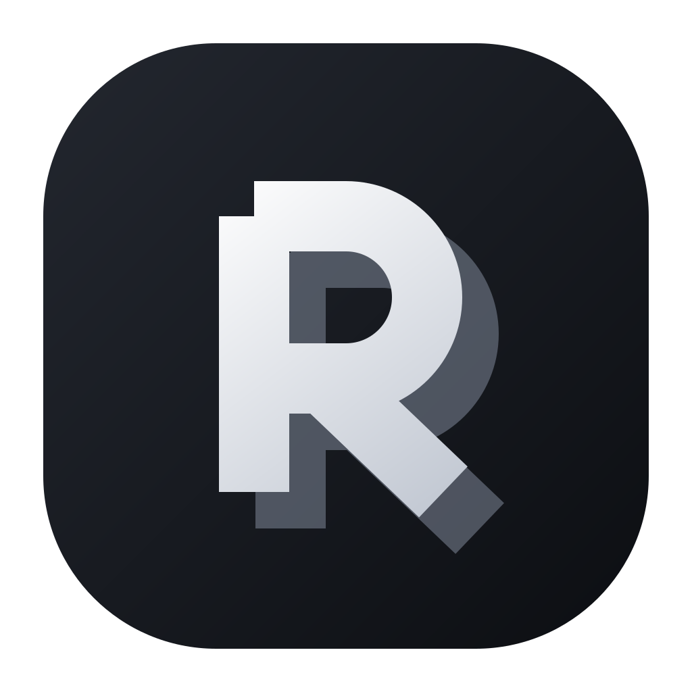

One R, one tile, six different crafts — the register you pointed at: mostly achromatic, the interest coming from construction rather than colour. Each row shows the tile at 112px, the lockup, the 18px title-bar size, and the light inverse.
CURRENT

AExtruded
Flat cut terminals with the letter lifted off its own shadow. Depth without perspective.
Relay
BKnot
The leg passes over the bowl and the bowl passes through the stem — one woven path.
Relay
CFaceted
Three strokes, three tones — the letter lit like an object rather than drawn like type.
Relay
DKnockout
Solid tile, letter removed from it. Highest contrast, works down to a favicon.
Relay
ESheared
Cut at the waist, the top half pushed forward. A diff, read as a letter.
Relay
FSolid
Drawn as a filled letterform, not a monoline — square counter, heavy leg, no gradient tricks.
Relay
TITLE BAR · CONCEPT A
The tile already says R, so the bar should not say it again. Four ways to spend that space instead — all the same mark, at 24px, on the real bar.
7G7GrausharnessHomeChatBoardCodeSessions
1 · Mark alone, then the project. The name lives in the window title and the installer — the bar spends its space on where you are.
RELAY7G7GrausharnessHomeChatBoardCodeSessions
2 · Wordmark only, carrying A's offset shadow instead of the tile. Same idea as the icon, no monogram at all.
7G7GrausharnessHomeChatBoardCodeSessions
3 · Untiled glyph — the tile is for the installer and the taskbar; inside the app the letter stands on the bar itself. Lightest of the four.
7Grausharness · masterHomeChatBoardCodeSessions
4 · Mark plus a two-line context slug — project over branch, which is what you actually need to know at a glance.
untiled, dark bar
RELAYwordmark, dark bar
My pick is 1 for the app and the tile for the installer: the icon is the only place the letter needs to appear, and the bar then carries the project instead of repeating the product name.